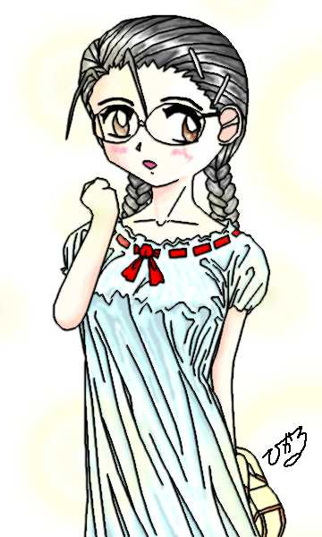

「天使のお仕事 第8話」
カレンダーでは６月もそろそろ終わりを迎えようとしてた。そして、気温は容赦なく日を追うごとに暑くなっていった。
「だから、この公式の証明は以上のように行われるわけだ。そして、それを応用しているのが問１なんだ。だから問題文に書かれている数式を展開して、変数χについて整理していくとこのような形に…」
「むぅ〜ん、あづいぃぃ」
数学教師のよけいに暑さをすすめるような話を、上の空で適当に聞きながら伊織は小さくつぶやいた。たしかに６月の方が真夏よりも平均気温は低いとはいえ、まだ夏休みにも入っておらず、日々教室にいる身にとってはなかなかつらい状態である。
「あぁ、暑いしだるいな」
伊織が女の子の体になって、少しは暑さに強くなるかと思ったのだが、そう都合良くはならないみたいであった。そして、それよりも女の子になって痛感したのは、女の子故に制限されることの多さだった。
ついこの間も、セーラー服のおなかの所を少し開け、胸に向かって下敷きでぱたぱたと風を送り込んでいた。ところがふと視線を感じ、そちらを見やると、そこにはそのシーンを凝視している隣のクラスの男子がいたのだった。伊織に見つめ返されたその男子生徒は、まるで”見てはいけないものを見てしまった”というような様子であわてて目をそらし、すすーっと向こうの方へ逃げていったのだった。
『どうせだったら女子校だった方が楽だったかもな、スカートははだけて、バタバタやったりしても平気だろうしな…。いっそのこと今度は女子校に転校しようかな』
どこで手に入れた知識か、そんな本末転倒なことを考えながら、後ろの方の席に座っているのを幸い、こっそりセーラー服の中に下敷きで風を送り込んでいた。
そして、伊織はいまヘアクリップをつけていないのであった。
基本的に授業中は女の子らしくする必要も、女の子の知識も必要ないし、つけつづけるとまた意識をのっとられるかもしれないと気持ちも悪さもあり、非装着モードにしているのだった。
もっとも、授業中だろうとなんだろうと、『大変ですわぁぁ、大事件ですわぁ、イオちゃん』とよびかけてくるパラレルから逃れたかったというのもあるのだが。自分は顔色一つ替えず、人の都合を関係なしに授業中でも割り込んでくるのだった。ちなみに３日まえ『大事件ですわぁ』とよびだされた時は、教科書に水野晴雄に似た人物がでていたということだったのだが。
キンコンカンコーン
「起立、礼」
おさだまりのかけ声とともに授業が終了し、教室の中の空気が少しだけ動き始めた。
「伊織ちゃん、お昼しよ。中庭に先行くよ。」
「おい、伊織、おいてくぞ」
「あぁ〜待ってよぉ真織ちゃん。あたしも行くよぉ。」
賢明なる読者諸氏はこの言葉遣いでおわかりだと思う。授業終了と同時に伊織はヘアクリップをつけたのであった。その時間わずか０．５秒。ではその過程をスローモーションで見てもらお（どかっ 殴）
と、とにかく、この瞬間に、女の子として自然に行動ができるようになっていた早川伊織は真織と瑞樹を追いかけて教室を出ていったのであった。
——少年少女文庫１００万Ｈｉｔ記念作品——
原作 １００万Ｈｉｔ記念作品製作委員会
第８話担当 もと(ＭＯＴＯ)
第八話 「乙女のエナジー」
「ふぅ」
放課後、真織といっしょに学校をでて神社に帰り、一人で自分の部屋におちつくと、伊織は鞄をベッドにぽ〜んと置いてセーラー服の上を脱ぎ、大きく伸びをした。
その振動で、ベッドの上よりこちらの方が涼しいのか、フローリングの床の上で丸まっていたシリアルがひょいと首をあげた。
「どうしたんだよ。学校行ったくらいで疲れたのかい」
「だって、暑いんだよ」
「そりゃ、夏だからね」
「それがなんの慰めになるっていうんだ？暑いと疲れるというのは当然じゃないか」
ベッドの上にどっかりあぐらをかいて座り、腰に手をあて、シリアルの方に向かって伊織はぶーたれていた。
「べつになぐさめる気なんて無いさ。事実を述べたまでさ」
「はいはい。わかったよ」
「まあ夏だからできるというものだってあるのだろ？来週からいよいよ体育がプールになるっって喜んでいたじゃないか」
「そう、それなんだよなぁ」
伊織は左ひじをあぐらをかいた太股にたて、あごをその上に載っけて考え込んだ。
水曜日の昼休みの中庭に、真織や瑞樹もふくめたクラスメイトの女子とのお弁当タイムでその情報をゲットして、伊織は最初は気分上々だった。
ところが今日、めずらしく真織抜きで、瑞樹と一緒に帰っていくときに重要な点を瑞樹から指摘されたのだった。
「いよいよ来週から、プール開きだな」
右手でＶサインを出して、にやっと伊織はわらった。
「そうか。よかったな」
「うんうん」
「水着で水につかれるし」
「うんうん」
「気持ちも涼しくなるし」
「うんうん」
「女子の水着も拝み放題だし」
「うんうん…ってなんだよ。そんなことないよ！」
おもわず、真織をはじめ、クラスメイトの水着姿を思い浮かべて、伊織は目尻を少し下げて、顔を赤くするという複雑な表情をした。
そんな伊織を揶揄するような口振りで瑞樹はつっこみを入れていく。
「だってそうじゃないか。伊織、今、おめえ想像しただろう」
「あのなぁ、そんなことするかよ」
「そうか、女の子同士で水着を眺めてもしかたないか」
「あのなぁ。女の子同士ってなんだよ。そんな言い方ないだろ」
「だけど、これも事実を述べたまでさ。そいつは反論できないだろ」
「仕方ないじゃないか……」
そういい返されると、返す言葉もない伊織はいやな顔をして黙ってしまった。
「まあ、そうして鼻の下のばしている”女の子”ってないだろうけどな」
「あのなぁ、人をナンパ師藤本と一緒にするなよな」
伊織は自分が知らず知らずのうちに下がっていた鼻の下と、ついでに口の端と目尻をあわてて引き上げ、厳粛な顔（と本人が思っている顔）になって、不機嫌そうに言い返した。
「まったく…まるで変態みたいに言うなよな」
「ふん、まあとにかく、そんなオヤジ状態で女子更衣室にはいったら学校中の笑いものだぜ。」
「……」
「というわけさ」
事情を一通りシリアルに説明し、今度は両腕を顎の下に置いて、ため息をつく伊織だった。
「なるほど。たしかに、一応は女の子どうしであるということは的確な指摘だね」
肩をすくめるように（どこが肩かと指摘しないように(笑)）シリアルがつぶやいた。
「”一応”って…まあ、そりゃそうだがな…」
「でも、まあボクの思うところ、更衣室では大丈夫だと思うよ」
「なんでさ」
「それは、去年の真織の水着写真もまともに見れない状態だからだよ」
「う、うう」
軽く指摘したシリアルの言葉に、伊織はさらに顔をしかめた。
実は昨日、夕食の場で来週からの水泳の授業の話がでて、社の本殿に用事があった守衛がいないことをいいことに、真織の学校指定のスクール水着や、なぜかあるもう一着のスクール水着を”伊織ちゃんの水着よぉぉ”（声の主はもちろん真須美お母さん）という声と共に見せられた伊織は、血が頭の中へと駆け上がる状態にさせられたのだった。
しかもその状態のところに、『そうだ、去年の写真有るんだ』の真織の声と一緒にアルバムが持ってこられ、『あ、去年買ってあげたビキニの水着じゃないの』とか『あ、こんな写真まで有るんだ、ちょっと恥ずいや』などの会話を聞かされ、なぜかあるらしい”伊織ちゃんの水着写真”を探していた真織が、『ほら、あたしのこの写真、胸が大きく見えて恥ずかしいのに、写真屋さんの手違いでこんなに引き延ばされちゃったの』といって写真をつきだしてくる攻撃がクリティカルヒットをあたえて、伊織をふらふらの再起不能にしたのだった。
「しょうがねえじゃん。いきなりあんな話になるとは思わなかったんだから」
「どうせ、その時は男モードだったんだろう。あの程度でその状態になるようじゃ、オヤジ状態にはならずにすむ訳だよ」
「う、うぅ」
そういわれると確かに反論ができない伊織であった。
「それにしても、どうしてヘアクリップつけて無かったの？」
「いや、このまえの洗脳の一歩手前までさせられそうになったから、１人でいるときは外すことにしていのさ。それに、あの時は急に御飯ですよ、って呼ばれたから」
ご存じの通り、ヘアクリップをつけているとしだいに意識が女の子の意識として溶け合い、ついには洗脳されてしまうのだった。
実は、伊織は一度、完全洗脳の一歩手前まで言ったことがあり、それからヘアクリップに用心するようになったのだった。
「ふうーん。だけど学校でそんな格好していたら、すぐに男だってばれるかもしれないけどね」
シリアルはベッドの上にあぐらをかき、上半身はタンクトップ１枚で毒づいてる状態を指摘した。
あわてて足を組み直して、正座の足と足との間にお尻を入れる女の子座りにかえて、あいかわらず伊織は答える。
「はい、これで大丈夫。それに、ちゃんと休み時間とかはヘアクリップつけてるからね。ちゃんと女の子してるさ」
「休み時間って……じゃあ授業の時は？」
「そんときゃはずしてるさ。また、身も心も洗脳されちゃかなわないもんね」
「……まあ、いいけどさ……。だけど、いいの？」
ふと、気がついたようにシリアルが言葉を続けた。
「なにが？」
「来週水泳だろう。そんときゃどうするのさ？」
「どうするって…？」
「ヘアクリップ、使えないよ」
「………あっ！！」
考えてみれば、水泳の時間にアクセサリーをつけるわけに行かないのは当然のことだった。
でも、そうなると、ヘアクリップの力を借りずに女の子らしくしないといけないのだった。
「でもでも、こっそりスイムキャップの中にいれておくとか」
「それは絶対ダメ。水の中に長時間入れて、万一故障でもしたらどうするの」
「……。あれって故障するもの？」
「どんなものにも故障はあり得るよ。それに最悪の場合、先生に没収されたらどうするの？あれが人間の手に渡るとろくなことにならないからねぇ」
「うぅ…」
もっともなシリアルの意見にとても言い返すことはできなかった。それに、万一、あのヘアクリップが無くなったとすると、永遠に自分自身で女の子していく羽目になり、そんなことを続ける自信など伊織にはとうてい無かった。
「……ど、どうしよぅ……」
さっきまでの単なる少し不機嫌な状態から、不安感が満ちてくる状態へレベルアップしていき、伊織の動揺はどんどん増していった。
「まあ、だけどいいチャンスかもしれないかも。ヘアクリップを使う時間が少なくなるんだから、すこし、それに頼らず自力でやっていく練習をしたらどう？それに、いつヘアクリップ無しで活動することが必要になるとも限らないんだしね」
「まあね」
いやいやながらもうなづく伊織であった。
「伊織ちゃん、どうしたの？このところちょっと変よ」
日曜日の朝食の席で真須美おばさんがちょっと心配げに声をかけた。
「え、な、何でもないですよ、あははは(笑)」
あわてて伊織は笑い声をあげる。その頭にはヘアクリップが着けられていなかった。シリアルに言われたとおり、さっそく練習を開始していたのだった。
しかし、あらためてヘアクリップ無しの男の子の意識で、”オンナノコすること”のハードさを思い知らされていた。
夕食を食べるときの箸の動かし方や食器の持ち方、朝食のバタートーストのつまみ方まで緊張してしまい、味も良くわからない気になってしまった。
そして、女の子らしく一人称を”あたし”といい、女の子しゃべりをして、真織を”真織ちゃん”と呼ぶハズカシさに耐えるのも思った以上に大変なことだった。
さらには、お風呂に入るときも、髪の毛のまとめ方や洗い方を思いだして、何と言ってもオールヌードになった自分自身に妄想をいだくことなく体を洗わねばならなくなったのだった。そのため、風呂おけに腰をかけて、かかり湯をして、目をつぶって体をごしごしする事にした。
それでも、最初の日に湯あたりしたおかげで、かえって用心したのか、お湯の中でも鏡を見ず、長く湯船につからず、平常心を唱えながら入浴はなんとか無事すますことができた。
だが、入浴後は下着を着替えなければならないという事実に、あらためて呆然となってしまった。でも有り難いことに？パンツの方は基本的には男女とも変わらなかったが、ブラの方は相変わらず背中のフックを止めたり、胸の部分の痛くならないように下着を調整したりするのに艱難辛苦に耐えなければならなかった。
さらには、トイレの方だが、”もうあまり考えないでおこうと”というわけで、さっとトイレに入り、さっと座り、さっと用を足し、さっと後始末をして、さっと出ていくのであった。
だけど、女の子の小用の後、ちゃんと紙で後始末をするのはとびぬけて恥ずかしく感じ、”おしっこに行く”ことを考えちゃうとトイレに行きづらい、だけど我慢するのはもっとはずかしいと悶々とした気持ちになるのだった。
もっとも、夜中に寝ぼけてそんな意識をせずに、男の意識のままトイレに行って、トイレを汚さなかったのは幸運だったといえるだろう。
そんなわけで、朝を迎えて、朝食の席に着く頃には、伊織の顔にはすでにもう疲れ切った表情が出ていたのである。
「今日、明日とお休みだし、部屋で休んでたら」
そんなことを知らない真須美おばさんはそうつづけた。
「いえいえ、ほんとに大丈夫です」
「ほんとに？」
「ええ、ええ、もちろんですよ。をほほほほ」
あきらかに、アヤシゲな笑い声で答える伊織だった。
「じゃあね、伊織ちゃんこのまえ、来週から水泳だって喜んでたよね」
「そうそう、伊織ちゃん、泳ぐの好きだっていってたもんね」
「う、うん。そうだよね。やはり暑いと水泳ですよね。をははは…」
真織が話を振ってくれたのを幸い、あわててわざとらしく話をそらす伊織であった。
「え、ええ。やはり夏は水ですね」
「でも、たしかこの前、学校指定の水着しかないから恥ずかしいって言ってたよね」
「え、それってほんとなの？」
「え、あ？そそうでしたっけ？？あ、あの、あのときは急に真織…ちゃんのビキニを見ちゃったから…」
なにしろ、あの状態ではどんなことを口走っていた完全に覚えているはずがなかったのだった。
「伊織ちゃん、真織のビキニ恥ずかしそうだったわね。やっぱりワンピースかなんかで、かわいい感じの水着が好きなのよね」
「なにいってるのよ母さんっ。伊織ちゃんももう高校生なんだから、ここは一つあたしとおそろでビキニにしなきゃ。そうでしょ、伊織ちゃん」
「え、ビキニ？ワンピース？」
真織と真須美の波状攻撃にたじたじとなりながら、思わず後ずさりしそうになる伊織であった。
「まあ、どちれも…さ、さあー。……あはははぁ…」
服のついてのことで、このレベルのごまかしがこの親子に通用するはずがなかったのであった。そして伊織が、先日見せられた学校指定の水着以外に水着を持っていないことが確認されると、すぐに真須美必殺の”有無を言わせぬウインク攻撃”が炸裂し、本日のお買い物計画が発動してしまったのだった。
もちろん、彼女たちには守衛があきらめ半分でため息をついたことなど気がつこうはずもなかったのである。

「ふぅ…………」
とにかく休日と言うこともあって女性客がいっぱい。そして、シーズン間近をひかえて、女性用の水着がいっぱいのスポーツ用品売場の片隅の試着コーナーのわきで、ふかぶかと深呼吸をしている伊織であった。
第１話と同じショッピングセンターで、ほぼ同じ状況に遭遇しているのは、この話の登場人物が進歩が無いのか、作者が進歩がないのか（後者だろうな(笑)）。
「伊織ちゃん、こちらのふりふりっとしたの可愛いわぁ」
「もぉ。母さんったら。そんなのお子ちゃまっぽいわよ。それより、ほらこの水着、ちょっとハイレグ入ってるわ、夏はこれよ、これ」
「もぉ、そんなのより。ほらこのチェックのストライプのはいったこれもエレガントだわ」
「あ、まってあっちの”ＨＩＲＯＫＯ”のブランドのやつそんなに高くないし、ねえあたしもいっしょにそろえてもいいでしょ」
「え〜ぇ。ママこっちのブランドの方がすてきだと思うわ。”プリンセス・メアリー”のならおそろいで買ってあげるのに…」
「だからぁ、あのブランド少女趣味だもん」
「いいの、女の子は少女趣味でも。ね、伊織ちゃん」
「え？」
いささか呆然として２人のやりとりを聞いていた（というよりは、あてられた）伊織であったが、まさか火の粉が自分の方に降り注いでくるとは思っていなかったのだった。（甘いな、第１話でも教訓を生かしていないな。え？第１話とネタがかぶるからと思っていた？そんな理由でせっかくの”伊織ちゃんのお洋服お買い物計画”を中止をすると、まず間違えなくこの親子から命がねらわれるじゃないですか。というわけで、ＭＯＮＤＯさん、すみませんがよろしく）
おまけに、前回と一つ違うのは、あのときはヘアクリップの助けがあったが、今は頼みの綱のヘアクリップは、自分の部屋の机の抽斗の中においてきているということだけである。そして、今回は大勢の見知らぬ人混みの中で女の子しないといけないのである。
さらに、記憶をもとに第１話の教訓を生かそうにも、あのときの両方から１アイテムを選んでお茶を濁すという手も、水着では使えないのに気が付いたのだった。
やむなく、２人の「どっちが着たい？」攻撃に対しては、問題を先送りにすることにしたのだった。
「あ、あのぉ〜、もっといろいろ見てからの方が…」
「うん、そうよね。あ、あっちのほうもいいかも！！」
「わぁ、あれかわぃぃ！！」
「……（とほほ）」
最後の台詞が、向こうのコーナーへ走っていった２人を見送った伊織のものであることは言うまでもなかった。
こうして、試着コーナーに残された伊織はやっと一息ついたのだった。
だけど、まだ気は抜けなかった。伊織はとにかく自分に暗示をかけるように、試着コーナーの姿見にむかって、
「あ——あたし、早川伊織。……あたしは女の子よ。男の子じゃないの」
と言い聞かせるように唱えていたのだった。

その時、一番奥の試着室が空いて、髪の毛を三つ編みにしてめがねをかけた少女が出てきた。そして、姿見にむかってぶつぶつ言っている伊織を見つけて、小さく叫んだ。「ふぅ、ちょっと疲れたよね」
「そうね、そんなにたくさんの水着を見たわけではないのにね」
『…あの量が”そんなにたくさん”かどうか議論の余地があるだろうな』
やっと買い物が一段落し、少し休憩をということでみんなで入ったティーハウスに座り、注文終了後に始まった真織＆真須美親子の会話に、伊織は心の中でこう突っ込んだ。
あれから、いったいどれだけの何着水着を試着したか。２０を越えたことは間違えないが、後半はもう数える気力はなくなっていた。ビキニ・ワンピース・腰の部分の前後にスカートのようにフリルがついているもの（すこし、ロリが入ってるぞ）・ハイレグっぽいもの（これは伊織が断固拒否した）・スクール水着まで（天ヶ丘高校のものとデザインがちがうからの一言で着せられた）えっと、あとなにがあったっけ…
最後には、美砂とおそろいのチェックのワンピースを着せられ、恥ずかしさのあまり、美砂が伊織の背中に隠れて後ろからぎゅっと抱きつき、その胸の感触のおかげで伊織も昇天寸前までいく事件まで発生したのだった。
「でも、まあとりあえずはこんなものかしらね」
運ばれてきたミントティーに砂糖を入れながら、真須美は一人うなずいていた。
「うん、とにかく夏に向けての女の子の準備が始まった訳よ。ねえ、朝野さんもそう思うでしょ」
「えっ？」
美砂が口にくわえていたアイスティーのストローをはなし、小さく声を上げた。彼女も
「要するに、女の子が自分をきれいにしてくれる洋服を選ぶのに、全パワーを使わなきゃいけないってお話よ」
「あ、はあぁ」
「まあ、女の最大の楽しみだからね」
「ほんとに、だいたい、伊織ちゃんも、普段は結構男の子っぽいんだから」
ぐぎゅぎくっ！！
紅茶を飲もうとして思わず、むせ返りそうになる伊織であった。
「そうなのよ。おばさんはもっと女の子らしい格好させたいんだけどね」
幸い、今日の様子ではなかったようである。
「でも、伊織さんも真織さんもすてきですから…」
遠慮がちに美砂が言葉を出した。
「真織さんは神社の巫女さんの修行をしてるなんてすごいと思うし」
「そ、そう？」
まんざらでも無いように真織は笑った。
「伊織さんはスポーツが得意で元気いっぱいでアイドルとして輝いているし」
「アイドルとしてって…」
ご町内のアイドル化した先日の悪夢がよみがえる伊織であった。
「だから、今日はうれしいんです。お二人や真織さんのおばさまと一緒にお買い物ができるなんて」 にっこり笑って美砂は３人を見つめた。
「そんなぁ、言ってくれたら、いつでも美砂ちゃんに似合うお洋服のお買い物につきあってあげるわよ」
「そうそう」
そうなったら、すこしは２人のお買い物パワーのベクトルが美砂に向くように思えて、伊織は大きくうなずいた。
「美砂ちゃんてなんか赤毛のアンみたいでかわいいもの」
真須美は言葉をつないだ。その結果、今回の水着の選択も、ひらひらのついた”カワイイ系”の部類はどちらかというと美砂の方に行き、どちらかというとシンプルな大人っぽいデザインが伊織に選ばれることになったのだった。
「でも、ちょっと恥ずかしかったです」
「そんなことないわよ、美砂ちゃんもかわいいから。あのかわいい水着を着ると、男の子にもモテモテになるわよ」
「えっ」
美砂は急に言葉に詰まった。そしてたちまち、顔がトマトみたいに真っ赤になっていった。
「そ、そんなことないです。だって私、全然泳げないし、ちっとも彼女としてふさわしくないし」
「大丈夫だって。自分に自信をもって………」
真須美はそんな美砂に全く気づかない様子でしゃべり続けていた。一方、伊織と真織ははからずも顔を見合わせた。
「あれ、ぜったいあやしいわよね」
美砂とバス停で別れ、主婦らしく食料品の買い出しをして帰るという真須美をのこして真織と伊織は歩いていた。
「うん、たしかに」
伊織もうなずいた。
「どう考えたって、美砂ちゃん、好きな子がいるわ」
うんうんと頷きながら真織は歩いていった。
「ねえ、伊織ちゃん、なにか美砂ちゃん言ってなかった」
「えぇっっと……、あ、そういえば月島君って……ってことは”もんじゃ”かぁ」
”もんじゃ”こと月島文弥は去年、進藤伊織と同じクラスだった生徒である。
「月島君って水泳部の月島君よね。そっか”もんじゃ”ってあだ名なのか」
「そうそう、家がもんじゃ焼きの店をやっててね」
新入生の自己紹介で文弥という名前をだれかが『文弥って書いて”もんや”と読めるよな』といったところに、同じ中学から来たやつが『あ、こいつの家もんじゃ焼き屋なんだ』とだめ押しをしたおかげで、それがあだ名になってしまったという、ある意味悲劇の人である。
「へ〜ん」
「まあ、明るい結構いいやつだよ。自称、次世代の水泳部をしょって立つ人材だそうだけど」
伊織は、去年の水泳の授業の時に文弥が冗談半分でそんなことを言っていたのを思い出して、つい思い出し笑いをしてしまった。
「ふ〜ん。伊織ちゃん、詳しいんだ、月島君のこと」
「えっ、いやっまあ」
「ひょっとしたら、伊織ちゃんも月島君に興味があるの？」
ふふっというような笑いをして真織は伊織の方へ振り返った。
「まさか」
「うふ、どうかしら」
真織は指で伊織のほっぺたをつんつんたたいて。
「ちがうったら」
「そっか、伊織ちゃんは芹沢君命だもんね。ふっっふっ…」
「そんなんじゃないって」
「わぁは、伊織ちゃん赤くなった。かわいぃ」
「だから…」
そう、ヘアクリップをつけていない伊織が赤くなったのは”月島君”や”芹沢君”のせいじゃなく、もちろん真織がしてくる、女の子同士のじゃれつきのせいであった。でも、さっきから、『早川さんと二人っきりで歩いていく』ということを意識しているおかげで、伊織の行動がもじもじしてしまい、自然と女の子っぽくなっているのは幸いと言うべきであろう。
「それよりも、朝野さんだよ。彼女ぜったい、もん…月島君のことが好きなんだよ」
「そうね……。月島君って誰かつきあってる子いるのかしら？」
「さぁ…」
「うまく、告白できるといいよね…」
「だよねぇ…」
自分と利害関係のないところでの片思いの関係はすべて”うまくいったらいいよね”と考えるのが女の子だった。
「伊織君、ちょっと社務所まで来てくれんか」
家に帰ると、待ちかねたように守衛が呼んだ。
「おじさん、どうしたの」
「うむ、またいつものように、やってもらわねばならないことができてな」
もちろん、社務所にはその持ち込み主が、いつもと同じようにお茶を飲みながら座っていたのだった。
「イオちゃぁん、お買い物どうでしたぁ？かわいい水着買ったの？」
あいかわらず、脳天気にパラレルは声を出した。
「な、なんだよ」
脱力するような心持ちで、どっしりと座布団の上に座り込み、伊織は渋面を作った。
それを見て守衛は一礼して部屋を出ていった。
「だいたい、どうしてパラレルがそんなこと知ってるんだよ」
「もちろん、シリアルが教えてくれたんですのよ。」
社務所の隅のほうで、なぜか肩をすくめているように見えるシリアルに向き直って、パラレルは言った。
「まったく、あのバカ猫が…」
「わるかったね、バカ猫で。まあ、その様子じゃまだまだ特訓の成果は完璧じゃないようだね」
「わかったわよ」
とりあえず、正座になり、女言葉に直す伊織であった。
「でも、わたくし感動しましたわん、”特訓”とは」
なぜか、ガッツポーズになりパラレルは言った。
「”思いこんだら、試練の道を〜♪、だって女の子なんだもん♪”ですわ」
「歌詞が混じってるぞ…」
目に炎がゆらめかないか、冷や冷やしながら伊織はつぶやいた。
「いいのです、細かいことにこだわっていては甲子園で勝ち残れませんわ」
「あのなぁ」
「とにかく、今度のお仕事にはふさわしいのです」
強引に、自己完結すると、例によって天空より紙テープを出現させた。
「そう、何しろ次の任務ですわん」
「…また、紙テープというわけかよ」
「なんだったらカセットテープかディスクにして、お仕事を伝えた後”なおこのテープは自動的に消滅する”とやってもいいですけど」
「だから、なんなんだよそれは」
…ディスクはともかく、カセットの方は世代的に知るはずのない伊織であった。
「まあ……ともかく、今回の任務ってなんだよい」
「それは！！」
パラレルはすっくと立ちあがり、右腕で指を立てて斜め上へと差し上げ、毅然として宣言した。
「スポ根です！」
なぜか、その左手にはグローブと野球ボールが握られていた。
「へ？」
伊織は”すぽこん”という言葉を口の中でつぶやいた
「……また、うちの学校の運動部の手伝い？」
「ちがいます。ある少女をオリンピックの星にするのです」
「お、おりんぴっくぅぅ？？」
伊織は再び絶句し、やっとのことで言葉を絞り出した。
「そ、そんなこと俺にできるわけがないじゃないか…」
「いいえ、大丈夫ですわ」
「どうして、ガッツと根性で」
「あ、あのなぁ」
「なんだっら知恵と勇気っていうのは？」
どこがスポ根なんだ…というコトはさておき。
パラレルは写真を取りだした。そして、そこにはそばかすで三つ編みの少女が写っていた。
「あ、朝野さん…」
「そう、朝野美砂さんですわん。彼女をぜひオリンピックへ」
「む、無茶だ！！」
正直言って、オリンピックどころか、普段の体育の授業の様子からも見ても、運動音痴といういうべき美砂の姿を思い浮かべ伊織は叫んだ。
「でも、それが彼女の望みなんです」
「え？あの子そんなこと夢にしてるの？」
「そんなわけないだろ」
そこへシリアルの冷静な突っ込みが入れられた。
「まったく、パラレルは何度言ってもわからないんだから。水泳がうまくなりたいということとオリンピック出場は関係ないっていってるのに」
「え？じゃあ、美砂さんの夢って」
「水泳がうまくなって、水泳部の月島君に振り向いてもらいたい」
「な、なんだ。それって…」
要は恋愛相談じゃないか…、しかもさっき早川さんとしゃべっていた。心でそうつぶやき、伊織は大きく吐息をついた。
「でもぉ、やっぱり、水泳はめざせオリンピックですわ〜。がんばれ日本。金メダルへのターンを目指すんですよ〜」
「あのなぁ。なんでそうなるんだよ」
ヒートアップしたままのパラレルに伊織は完全にあきれ顔になった。もちろん、後半はふつうの現役高校生には、まったくわからない部分であった。
「まあ、パラレルの趣味はぼくにもよくわからないんだけどね。それよりも、依頼の方だけど、こっちの方は冗談でもなんでもないからね」
「そりゃもちろん…」
伊織としても異存はない。さっきまで真織と『片思いがかなったらいいね』と言っていたカップルである。その手助けをできるのはむしろ喜ばしいくらいだ。
「それにしても、どうして”水泳がうまくなって”なんだい」
「要は彼女、”自分のような泳げない子が水泳部のホープの月島君の彼女になるなんて”と思いこんでるわけなのさ」
「なるほど、確かに内気で思いこみの激しそうな子だったしな」
自分のことは棚に上げて伊織は納得した。
「わかった、やってみる」
「はいそうと決まれば、早速特訓ですわ〜」
どこからか、竹刀と鉄アレイを持ち出すパラレルであった。
「だから、そんなものもちだすんじゃない！」
おもわず竹刀を取り上げ、パラレルをはりたおす伊織であった。そして、それを見たシリアルはぼそっとつぶやいた。
「伊織自身の特訓の方はまだまだね…」
さて、あっという間に月曜日の教室である。
３時間目終了のチャイムが教室に鳴り響くと、クラスの女子たちはサブバックをもって教室を出て行き始めた。
「伊織ちゃん、行こう」
学校指定の水着の入ったサブバックを持って真織は更衣室への移動を誘った。
「いいよなぁ」
男子の体育は水泳じゃなく、サッカーであるという理不尽さに男子から声が掛かる。
「そう、二人の早川さんの水着姿が見えないのは、残念至極」
グーをつきだしているのも叫んでいるのはもちろん藤本である。
「いいから、さあ行くぜ、伊織」
そういって、瑞樹は伊織の腕をつかみ、廊下へずるずる引っ張っていった。
「ふぅ」
伊織はためいきをついた。『とうとう、着替えか』と思うと正直気持ちが重かった。
学校でもボロは出してはいないけど、正直言って人目が多いところで女の子らしく振る舞うのはやはりストレスがたまる物だった。
それに、もう１つ悩ましているのは美砂にどうやって水泳を教えるかであった。
学校でも内気で、目立たない少女なので、話しかけるきっかけが朝からなかなかつかめず、ましてやどのようにして水泳を上達させるかはまる目処がたっていなかったのである。
瑞樹には昨日、電話で大まかな事情を説明して相談したのだが、まず帰ってきた一言が、「なぜ伊織が女の子の水着を買いに行くというオモシロいイベントにあたしを誘わなかったんだよ」というせりふで、どうも当てにできない状況だったのだ。
「なにやってるんだよ。はやいとこ更衣室へ行かなきゃいい場所無くなるぞ」
「そう、そう」
「ふぁぁ〜い」
それよりも当面の危機は”いかにして女子更衣室でふるまうか”であった。女子の水着への着替えかたは一応わかっていた（ヘアクリップさん、ありがとう）。それより問題は、まわりのクラスメイト（女子）の着替えを心しずかに眺めることができるかであった。ふつうの体育の時の着替えでも脳の血管が切れる一歩手前まで行ったのに、今度は水着へ着替えるためには真っ裸になると言う事実。このスーパー嬉しハズカシ状態をいかにして乗り越えるかであった。
「な、なんだ…」
世の中には便利なものがちゃんとあって、着替え用のタオルなるものが存在しているのであった。肩の下からすっぽり腰のところまで隠れてしまい、見方によっては普段の体育の時よりも露出度が低いとも言える状態ですらあった。
もちろん、そんなものを用いずに、バスタオルを利用する子もいるが、ほとんどの子はうまく隠しながら着替えをしているのだった。もちろん中にはかなりオープンかつ大胆に着替える子もいるのだが、そちらのほうは見ないようにすればＯＫ。
そして、大きく悩んでいた事柄がとりあえず回避され、かえって伊織は心を落ち着かせることができた。こうして、これで伊織がのぼせて倒れる事態はとりあえずは回避されたのだった。
「よっ、伊織ちゃ〜ん、残念だったよな」
にやにや笑いをして瑞樹が近づいてきた。瑞樹は普通のバスタオルを体にまとっている状態だった。わざわざ着替え用のタオルを使うという発想は彼女には無いのだろう。
「な、なにがさ」
「へっへ〜。着替え見たかったんじゃないか？」
「ば、バカいうんじゃないよ」
「あら、女の子らしくない言葉ですわよ」
あいかわらずにやにや笑いで瑞樹はからかった。
「そんなこと、あ・り・ま・せ・ん・わ」
ふくれっ面になって、わざと語尾を強調するように伊織は答えた。
「ほぉおお、じゃあ、見ても大丈夫だよな」
そういって瑞樹は、自分の胸の部分でとめられていた、ブルーのタオルの方へと手をのばしていった。
「な、なにを」
「さあね。女の子同士なんだからみてもいいんだよぉ〜〜」
「お、おいやめろって」
「じゃぁ〜〜
ん！！」
瑞樹が大きくタオルをはだけたそこには——————もちろん、天ヶ丘高校指定のスクール水着があったのだった。
惚けたようになった伊織は、一瞬の間をおいて大きく吐息をついた。
「ふ、ふうう…、お、脅かしやがって…」
「へっへぇぇ、ちょっとは期待したろう」
「だれが、何しろ”女の子同士”で・ご・ざ・い・ま・すから」
「ほぉぉ———」
もういちど、今度は少々の怒気をまぜて、伊織は返事を返した。その様子をにやにやと見て瑞樹は答えるのだった。そこへ、次の瞬間、別の声が聞こえた。
「あ、伊織ちゃん。そのキャップとって」
「え？—————————えぇぇ！！」
何気なしに振り向いた伊織の目の前には、大胆にもぜんぜんタオルで隠していない真織の胸がバァァ〜〜ンと広がっていたのだった。
思いがけないこの攻撃は伊織に１万のダメージを与えた。
そして、伊織はぶっ倒れてしまった。
「伊織ちゃん、本当に大丈夫？」
「う、うん。本当に大丈夫。気にしないで」
多少、ぎごちないとはいえなんとか笑顔を返すことができた。水泳の授業を休んだらという真織の言葉に、心配をかけたくないのでそう返事したのだった。
瑞樹もさすがにからかいすぎたと思ったのか、伊織をフォローしてくれ、伊織はプールに立つことができたのだった。
「ふぅ〜ぅ、まいったなぁ」
一呼吸とるように伊織はゆっくり首を回した。準備体操をして、プールに入って潜水・バタ足などで水に慣れた後、いったんプールサイドに上がって一息ついていたのだった。
「それにしても…美砂ちゃんだよね…」
順番にプールを縦断するように自由な泳法でみんなが泳いでいた。そして美砂の番になった。しかし、クロールで泳いでいくが、ほんの少し泳いだだけで、立ち上がり止まってしまって、また泳ぎ、また立ちどまるのを繰り返しているのだった。
「どうしたもんだろう…」
自分のことは棚に上げて、伊織は美砂の泳ぎかたをながめていた。どうやって彼女に泳ぎ方を教えたらよいのかよくわからなかったのである。
そこで、となりにいた瑞樹に聞いてみると瑞樹は意外なことを行った。
「ああ、あの子の場合簡単だよ。」
瑞樹はあっさりと答えたのだった。
「見てみなよ。あの子、息継ぎのところで立ち上がっているだろう。要は息継ぎができていないんだよ」
「なるほど…」
ふむふむと伊織はうなずいた。
『とにかく、うまくなる見込みはあるというわけだな。』
伊織は考えた。となると、そっちの方はいいとして、もう１つの、どうしたら彼女をコーチしてあげることができるかという課題の方が問題であった。
「じゃあ、早川伊織と朝野と佐野と小林。今度はこちらで泳いでみろ」
しばらくして、体育教師が何人かを横で別グループをつかって練習をさせた。
「ふひゅう」
伊織も実は泳ぐのがあまり得意でない。何回か立ちながら、プールの端までどうにかたどり着いて、大きく息をついた。
「意外よね。伊織ちゃん、あまり泳げないんだ」
プールサイドにいた真織が声をかけた。
「う、うん。まあね」
あいまいに伊織は答えた。たしかにもともと男の時にも運動神経が発達した方ではなかったが、今はやっぱり女子の水着を着ているので、恥ずかしさのおかげでなんとなく足を動かしたり大きく広げるのができず、固まってしまう気がするのだった。
そんな様子を見て瑞樹はからかうように声をかけた。
「まったく、サッカー部のマネージャーとして暴れていた時の元気はどうしたんだよ。なんだったら、こちらのほうも一緒に特訓するか？」
「こちらのほうも一緒に？」
真織が不思議そうに聞いた。
「あわわ、なんでもないなんでもないよ…」
あわてて伊織は言った。
『くそっ、瑞樹のやつよけいなことを………ちょっとまてよ』
「そうだ、一緒にだ」
「はぁ？」
急に大きな声を出した伊織を２人は不思議そうにみつめた。
伊織はそんな２人をほっておき、プールをやっと横断して伊織のすぐ横にたどり着いたばかりの美砂に声をかけえた。
「ねえ、美砂ちゃん、一緒に特訓しようよ」
「え？ええぇぇ！！」
いきなり、言われて美砂は完全にびっくり仰天してしまった。
「おねがい。あたし泳げるようになりたいの。ねえ、一緒に特訓しようよ」
「で、でもぉぉ…」
びっくりして美砂は言葉を続けることができなかった。
「おねがい。おねがい。おねがい。伊織の一生のお願い」
ここぞとばかり、客観的に見てかなり恥ずかしいお願いの台詞を並べ立てた。
そこへ、ピンときて追い打ちを欠けたのが真織であった。
「ねえ、いいじゃない。いっしょに特訓してあげてよ。練習はあたしや瑞樹がつきあうからさぁ」
「えっっ…えぇ…？あ、ああ、はいはい。もちろんあたし私も手伝うわよ。うんうん」
一瞬、虚をつかれた瑞樹も、横から真織が肘でつんつんと付いてきたのであわてて口を合わせた。
「…は、はい。よろしくお願いします」
「やったぁぁ」
「よかったわね、伊織ちゃん。美砂ちゃんも一緒に練習できるしさ」
「は、はい。ありがとうございます」
思わず、コクっとうなづく美砂であった。
その様子を見て、前で腕を組み、うんうん頷いている瑞樹であった。
「うん、うん。よかったよかった。」
「そうそう。僕もうれしい。笹島はともかく、これからプールで真織ちゃんだけじゃなく伊織ちゃんや朝野さんの水着姿が見られるのだからも」
「そりゃ…水着姿だけど……て、わ！！おめえは！！」
もちろん、プールの金網のフェンスにへばりついていたのは…
「わぁきゃぁ、藤本くん！」
「きゃぁぁ、いやぁぁ」
「てめえ。どっから湧いてでやがった」
ドスっ ばきっ
瑞樹が手近なバケツに入った水で攻撃する直前に、両脇から拳が直撃し藤本はぶっ倒れた。
「おまえ、いい加減にしろよな」
「やめろ」
ぶっ倒れた藤本の両脇には拳での攻撃を終了した芹沢秀一と月島文弥が立っていた。
「ごめんな。早川さん、笹島さん。とりあえずこいつ回収するから」
「ああ、わるいな月島。それに……芹沢も…す、すまねえ」
「い、いや…とうぜんのことさ…」
なんか、口ごもっている２人であった。月島はそんな２人から目をそらすようにして、プールの中に入っていった美砂と伊織にも声をかけた。
「あ、ちょっと聞こえたんだけど朝野さんたち、特訓がんばってよ。水泳ってたのしいからさ。
じゃあ、芹沢。行くぞ」
「あ、ああ」
ずるずるずると、藤本の残骸を引きずって芹沢と月島は去っていった。
「ふう、まったく藤本君って…あれ、どうしたの笹島さん。顔、ちょっと赤いよ」
「い、いや、なんでもないよ。それよりも、おぉぉい、伊織ぃ、大丈夫か？」
「あ、ああ。それより、美砂ちゃん、もう大丈夫だよ。大丈夫だから」
藤本の出現とほぼ同時にプール内に戻り、”月島君”と言う声が聞こえた瞬間にプールの水の中に潜り込みそうな勢いで身を隠した美砂に伊織は声をかけた。
「月島君に、月島君に見られたよぉぉ、」
「見てないよ、大丈夫だから、ほんとうに」
そして、目に涙を浮かべて半泣き状態の美砂を肩を軽くぽんぽんたたいた。
「本当に、もう大丈夫だから」
真織も一緒に声をかけて何とか美砂をなだめることができた。
こうして、伊織ちゃんの初めての水泳の時間は終わりを告げたのだった。
「へぇぇ、結構本格的じゃん」
そのプールをみて瑞樹は歓声を上げた。
ここは、天ヶ丘高校にほど近い、ＳＡＫＵＲＡスイミングプールである。
あれから、放課後学校のプールで特訓をと考えたのだが、放課後は水泳部が使用＝月島君がいてるということで、美砂がぜったい恥ずかしいからイヤだと言ったので、真須美さんの友人がオーナーのこのスイミングスクールのプールを拝借することになったのだった。（そのかわり、瑞樹は子供水泳教室の助手として手伝わされることになったのだが、それはまた別のお話）
「この時間帯って小学生ばっかりなんだ…」
夕方５時という時間帯なので無理もなかったのだが、下校時間帯なのでいたしかたないことであった。
「いいじゃないの。美砂ちゃんも子供たちと一緒だったらはずかしくないでしょ」
「は、はい…」
「それに、更衣室だってインストラクター用のを拝借できるんだしさ。これだったら伊織も大丈夫だろ？」
「大丈夫ってなにがなの？」
「な、なんでもないよ」
あわてて伊織はごまかした。まさか『他の女の人が着替えているところで一緒に着替えるとまた気絶してしまう』なんて言えるはずもなかったのである。
「それよりもぉ、早くプールサイドへ行って泳ごうよぉ、美砂ちゃんも待ってるしぃ、伊織も練習したいしぃ」
…どうも、伊織はゴマカス時の方が女の子言葉がうまいようである。
「行こう、美砂ちゃん」
伊織はそういって美砂の手をとってプールサイドまで連れて行った。
その様子を微笑ましげに追いかける真織と、頭痛いという風情でついていく瑞樹であった。
「おまえ、だいじょうぶかよ？」
プールサイドに座り込み、瑞樹は口を開いた。
「なにが？」
「なんか、女の変な部分だけうまくなっている気がするぜ」
「そんなんじゃないけどさ。そんなことより、美砂ちゃん見た感じどう？」
伊織につられて瑞樹はプールの向こう側に目を向けた。そこでは真織に手を取ってもらって、ばた足に励む美砂の姿があった。
小学生たちはもうすこし向こう側の浅い場所で同じように基礎練習をしていた。
「ああ、あの子マジメだもんな。ばた足の練習といったら、きちんとしているから。水にも慣れてきているし。そしたら、今度は息継ぎの練習を始めるからな」
「ふーん」
「だけど、これで仕事完了なのかい？」
「ん？というと？」
「このまえ聞いた話じゃ、あの子、単純に水泳がうまくなるのが目的じゃないんだろ」
「う…ま、まあね」
「だとしたら、”はい泳げるようになりました、おしまい”じゃないんじゃないか？」
結構するどいところをつく瑞樹であった。
「まあ、そうなんだけどね…。あとは…どうしよう？」
「どうしようたってなぁ。だけどそれは伊織の方が適任じゃない？同じような性格のもの同士」
そういうと、瑞樹はすっくと立ち上がった。
「なんだよ。それは」
「いんや、別に」
そう言い捨てると、瑞樹はプールへ飛び込んだ。
「だって、しょうがないじゃないか」
”告白できない”という同じキーワードを当てこすられたようで、少々むくれてしまう伊織であった。向こうでは美砂の練習を手伝っている真織が手を振っていた。そして、美砂の練習を手伝うために伊織はプールにドボンと入り、向こうへ向かって進んでいった。
それから後も、美砂の特訓はつづいた。最初はばた足だけだったのが、今度は息継ぎの練習。さらには少しづつ前へ進めるように練習を繰り返す。うまく口が水の上に出せるように、そして、タイミングがつかめるように何度も何度も同じ動作を繰り返していく。それを一生懸命に美砂は続けていった。そして、その練習の間、伊織と真織は交代で美砂の足や腰が沈み込まないように支えてあげたのだった。
さらには、もともと”伊織も一緒に練習する”というコトになっていたので、伊織も瑞樹の命令？で、美砂と同じようにばた足や息継ぎの訓練に挑戦することになった。そして、練習している手を握ってくれたり、足を支えてくれたのが真織だということが、男の子の意識状態の伊織にとってはまことに嬉し恥ずかし状態になったのであった。
もっとも、「特訓だけではおもしろくないよぉ」というわけで、毎回練習の後は水中鬼ごっこ大会に興じる４人であった。（もちろん、水になれるのが目的という”大義名分”はあったのだが）
そのおかげか、最初は何となく伊織たちと話しづらそうにしていた美砂も、しだいにうち解けてきて、一緒にふざけ有ったりできるようになってきた。そしてそれは伊織や真織にとってもとてもうれしいことだった。真織は美砂ちゃんとうまくうち解けるために、どうやら意図して、おふざけモードをしてる様子で、なんとなくそれが判った伊織や瑞樹もそれにのって訓練そっちのけで遊んでしまっていた。
だが、その罰が当たったのか、木曜日などは真織は「え〜い、伊織ちゃんへおっぱい攻撃だぁ」と称して後ろから抱きつかれて胸をもまれるというセクハラ？を受ける羽目になってしまった。そのあげく伊織は「きゃぁぁ！」というあられもない悲鳴をあげてしまい、「ひどいひどいよ」と半べそ状態になってしまったのだった。
もちろん、真織はすぐにあやまり、美砂も「大丈夫？」と頭をなでてくれ、なんとかおさまりがついたのだった。どうやら、ヘアクリップなしの方の特訓も成果を収めてきているのかもしれない。
ちなみに、瑞樹はこの成果に呆れ…もとい、感心しながらも「あたしよりでかい胸をしている伊織がわるい」と身勝手な結論を出しているのであった。
こうして、その週が終わる頃には４人はすっかり仲良くなり、学校の帰りだけでなく、スイミングスクールの帰りもたいてい一緒にするようになったのだった。
「じゃあ、今日はあたしたちだけで帰るわね」
「じゃあね、瑞樹」
今日は子供たちの面倒をみてくれといわれた瑞樹を残し、美砂と伊織、真織はスイミングスクールを後にした。
日中と比べて少し涼風の吹いてきた夏の夕暮れ心地の町を歩いていると、気持ちがなんだかうきうきしてしまう気がした。
「なんだか気持ちいいよね」
「うん、なんとなくほんわかしてるよね」
「このまま帰るのちょっと惜しいよね、ねえちょっと公園に寄ろうよ。美砂ちゃんもまだ時間いいでしょ」
「あ、はい」
「ＯＫ。行こう、伊織ちゃん、美砂ちゃん」
うきうきした足取りで公園に向かう真織を追いかける伊織と美砂であった。
夕暮れ時とは行っても一番陽が高い時期なので、まだまだ明るい公園には、子供は少ないとはいえ、思いのほか人が残っていた。それでもなんとか木陰のベンチを三人で占領することができ、真織を中心に座り込み、売店で買い込んだアイスをつつきながら、たたずむことになったのである。
「う〜ん、もう夏だよね」
「もうすぐ、もっと暑くなりますよね」
「う〜みゅ、でもでも夏も悪くないし…」
「だよね。それに、もうすぐ夏休みだし。」
「あ〜でも、その前に期末試験があるけど」
「うう、それを言わないで…」
しかし、こうしてみると、伊織も意識や細かい仕草の方はともかく、言葉遣いの方はかなりうまくなったものである。（どれが伊織のせりふかは秘密(笑)）
「でも、今年の夏は去年の夏と違うんですよ」
「え？どうして？」
「うれしいですもの…だって…」
ちょっと、はにかむように、通学鞄を胸に抱きしめ、美砂は言葉を出した。
「……ありがとう伊織さん、真織さん」
「え？どうしたの美砂ちゃん、急に」
「あのね、だって伊織さんと真織さんと瑞樹さんと一緒に練習してるんですもの」
「いえいえ、どういたしまして、美砂ちゃん」
「そうそう、あたしも少しは泳げるようになってきたし」
「そうじゃないんです」
すこし、真織と伊織の方に向き直って、少し恥ずかしげに微笑んで話をつづけた。
「練習よりも、みんなといっしょに居ることができることのほうが、ずっとうれしいんです」
そう言って美砂はもう一度にっこりと微笑んだ。
「私、内気で、天ヶ丘高に入っても友達もできなくってずっとさびしかったんです。だからみんなとこうしているのが楽しくってしかたないんです」
美砂が、自分の心の内をはじめてしゃべってくれたような気がして伊織と真織はじっと聞き入っていた。
「なんだか、やっとこんな子でも友達になってくれる人が居てくれて、本当にお礼が言いたい気持ちでいっぱいなんです……」
その言葉を聞いた瞬間、真織はいきなり美砂を抱きしめた。
「あたしだってうれしいよ。美砂ちゃんと友達になれて。だって、美砂ちゃんほんとうに頑張りやさんなんだもん」
「えっ、そんなぁ」
そして、改めて美砂の手を握りしめ真織はつづけた。
「ねえ、だからあたしたちにできることがあったら言って。なんでも協力するから」
「は、はい。お願いします」
「特に好きな男の子のハートをゲットするのは絶対協力するから！！」
ギク。伊織は思わず真織の方を見つめた。案の定、美砂は顔色が真っ赤になっている。だけど真織に手をがっしりと握られて目を見つめられたて動くこともできなくなっていた。
「あのね、女の子の”乙女のエナジー”ってどこから来るか知っている？」
いきなり、話の方向が変化した。
「もちろん、人を好きになることなのよ」
真織は一直線に美砂の目を見据えて言葉を紡ぎ出した。
「女の子はね、好きな人のためだったら何でもしちゃうの。そして自分の力を２００倍にも振り絞ったり、困難なことにも耐えられたりするの。だから、どんな時でも決してあきらめちゃだめ！内気なだけじゃなにも生まれない。泣くのは後でもできる。顔をあげて飛び込んで行かなくちゃ」
すごい迫力に美砂は呑まれたように真織の言葉に聞き入って、おもわずうなずいていた。そしてその迫力に呑まれているのは、伊織も一緒だった。
好きな人に対して行動を起こせないという点では伊織も美砂と大差がなかったのかもしれない。それだけに、美砂に対して背中を押してあげないとという思いも強くなってきた。
そして、伊織もゆっくり美砂に話しかけた。
「ねえ、美砂ちゃん。自分に自信をもちなよ」
「え？」
こんどは伊織の方に向き直った。
「美砂ちゃんのことを”こんな子”がなんて思っている人なんて居ないと思うよ。それに、美砂ちゃんはほんとうに、かわいい子だと思うよ。だから自分のこと自信持った方がいいよ。男子だって美砂ちゃんがすてきな女の子だって判っている人もたくさんいるよ」
「そ、そんなこと」
「だめ、素直に自分の気持ちをぶつけて、積極的にいかなきゃ」
「そうそう」
伊織がその言葉をきっかけに、ぽんぽんと制服のスカートの汚れをはらうようにして真織は立ち上がった。
「だって、あたしたち。可憐な美少女なんだから。美砂ちゃんとくらべたら伊織ちゃんなんて、うちでは男の子みたいにバタバタしているもの、この前もお父さんの相手をしててさ…」
笑い声を交えて真織は言った。
その明るい様子につり込まれるように笑顔になる美砂と複雑な心持ちを混ぜた笑い顔をする伊織であった。
「なるほどな。さすがに同居しているとオモシロいシーンがみれるんだな…」
「あれは、お酒の事でおじさんからちょっと言われて…ってそんなことどうでもいいよ」
その日の夜、伊織は瑞樹に電話で帰り道での出来事の報告を入れていた。
「それより、美砂ちゃんに対する真織ちゃんの迫力はすごかったよ。でも、もっと積極的に動いてくれた方がうまくいくチャンスは増えると思うからよかったよ」
「ふ〜ん。たしかにな。でも、それは伊織にも言えてることだぜ」
「なんだよぉ」
自分でもあるていど図星と思っているせいか、不機嫌な口調になる伊織であった。もっとも、この点は瑞樹にも言えていることなのかもしれないが。
「とにかく、なんとかうまく告白のチャンスを作れないかな…」
「…ふうむ」
瑞樹はしばし考えて、言った。
「あのさぁ、伊織。おめえと真織ちゃん、土曜はヒマだったっけ？」
「ああ、大丈夫だと思うよ」
「ふむ、じゃあ真織ちゃんに替わってくれ」
「え？なんでさ」
「いいから、みんなで最強の特訓をするのさ」
なぞの台詞を瑞樹は言った。そして電話のむこうでの瑞樹のあやしげな笑いは、受話器を替わった真織にも移っていったのだった。
「なんで、ここにいるのさ」
「あらぁん、保護者代わりですわん」
この声の主はもちろんパラレルである。そしてパラレルは今、大型のワンボックスカーを運転し、その助手席には瑞樹が、後部座席には美砂・真織・伊織が座り込んでいた。おまけに、バスケットに入れられてシリアルまで同行していたのであった。
「さぁ、海はすてきですわよぉぉ」
今朝、朝稽古にきていた瑞樹によって起こされ、なぜか先に起きていた真織が真須美さんと一緒にお弁当の準備をしていて、有無を言わさず伊織は連行され、海へ向かって出発したのだった。
そして、その車を運転しているのが”知り合いのお姉さん”である（ことになっているらしい）パラレルだったのだった。
「いったい、どんな手品を使ったんだよ」
「もちろん、恋の魔法よぉん」
「きゃー、お姉さんも好きな人居るんですか？どんな人ですかぁ？」
「あ〜ら、真織ちゃんの方がすてきよぉ？」
「ぃやだぁ、お姉さんったら」
「きゃわいい〜」
はっきり言って、伊織にとって頭が痛い会話である。瑞樹はあいかわらずにやにやしているし、美砂は知らないお姉さんを前にしているせいか緊張気味である。
「いったいどういうつもりさ」
「言ったろう、チャンスをつくるのさ」
休憩に立ち寄ったサービスステーションで伊織は瑞樹をつかまえて問いただした。
「それより伊織、おまえ今日はヘアクリップ持ってきたか？」
「あ、ああ。瑞樹が言ったとおりにしたけど、どうしてだよ」
伊織は今朝荷造りをしたときに、間違えなくヘアクリップの入った小箱をバッグに入れたのを思い出したながら答えた。
「今日は伊織のフォローする時間が無いからねぇ。美砂ちゃんだけで手一杯になるかもしれないしな」
「なんだよ、フォローって。それに美砂ちゃんになにをするのさ」
「考えても見ろよ、今回は海だから着替えの場所が下手したらこの車の中だからね。そんなところで水着に着替えたら、まあ、伊織は昇天するのは間違えないだろうな。そんなドタバタが起こるとせっかくのチャンスが台無しだからな」
「だから、そのチャンスって何だよ」
「海には月島文弥君が居るのさ」
さらっと、瑞樹は答えた。
おもわず伊織は絶句した。
「じつは、ちょっと２組の水泳部の奴に聞いたんだが、月島って土曜日曜はあの海で水泳監視員のバイトをするらしいんだ。」
「……それって美砂ちゃん知ってるの？」
「知らないよ。もし知ってたらあの子、絶対に恥ずかしがって来ないもの」
まあ、そうかもしれないなと伊織はつぶやいた。
「だから、とにかくまわりでもりあげて、美砂ちゃんに海で告白させるんだよ」
「…どうやってさ…」
「それは、向こうで考えるさ。とにかく月島が居るところにあの子を連れて行かないと話にならないじゃないか」
「そりゃそうだけど」
「これだけで押し掛けていけば、なにかチャンスらしきものが発生するかもしれないじゃない。それさえあれば、あとはあたしたちが後押ししてあげたら…」
「まあ、たしかに何か起こりそうな面子だが…」
向こうの方で、シリアルをバスケットから少し出してあげて、きゃいきゃい言って遊んでいる真織と、笑顔でシリアルのあごの下をなでている美砂、それになぜかたこ焼きと鯛焼きをつまんでいるパラレルを見やって、伊織はつぶやいた。
「でも、本当にだいじょうぶかしら…」
とりあえず、女言葉で答える伊織であった。
「海はいいですわぁぁん。さすがは娯楽の殿堂」
例によってピントはずれなコメントを出しながらパラレルは砂浜に降り立った。その後をそれぞれの水着とＴシャツに身を包んだ伊織、真織、瑞樹、美砂が続く。そして、砂浜の適当な場所にエリアを確保すると、だれからともなくＴシャツを脱いで水着を披露していった。
瑞樹の水着は、チャラチャラしたものが嫌いな瑞樹らしく、デニム地で濃紺をベースにしたスポーティーな感じの今はやりのタンクトップビキニで、これがかえってボーイッシュな感じを与えていた。一方、美砂の水着は、セクシーなのがいやだという点は瑞樹と一緒だが、ワンピースでの水着で、白をベースに明るい茶系の赤とイエロー・グリーン系のチェックのパターンになっているもので、どちらかというとかわいさを強調したものである。
 一方、真織と伊織の方はというと、真織の意向で、細かい目のフラワーパターンで、ベースの配色がオレンジとライトグリーンでちがっているだけのお揃いの水着である。おまけに、これも真織の意向なのだが、ビキニのおへそまわりがオープンになった、ほんの少しだけ大胆なデザインの水着であった。本当はもっと露出度の大きい、もろにハイレグビキニのタイプも候補にあがったのだが、伊織がお店で真っ赤になって首を振ってイヤイヤをしたので、パレオも付いているということで、このレベルに落ち着いたのだった。
一方、真織と伊織の方はというと、真織の意向で、細かい目のフラワーパターンで、ベースの配色がオレンジとライトグリーンでちがっているだけのお揃いの水着である。おまけに、これも真織の意向なのだが、ビキニのおへそまわりがオープンになった、ほんの少しだけ大胆なデザインの水着であった。本当はもっと露出度の大きい、もろにハイレグビキニのタイプも候補にあがったのだが、伊織がお店で真っ赤になって首を振ってイヤイヤをしたので、パレオも付いているということで、このレベルに落ち着いたのだった。
ちなみに、パラレルの水着はアロハ調の結構派手なもので、どうも”海＝ハワイ”の図式でえらんだもののようだった。その上、パラレルは「じゃあ、あとはお若い方同士で」といって、さっさとどこかへと消えてしまったのだった。
もっとも、伊織にはそんなパラレルにつっこみを入れる余裕など無かった。
着替えの時には、ヘアクリップのおかげで割合とすんなり着替えに成功したものの、海辺ではとりあえずヘアクリップをはずすことにしていたので、その瞬間から伊織の血圧上昇が始まったのであった。
パラレルもふくめて５人のあいだで、一通り水着姿での品評会が終了していたおかげもあって、真織、美砂などからの悪意のないつっこみでより血圧が上昇するという悲劇は避けることができたのだが、どうしても自分が女性用の水着を着ている事実はいかんともしがたいのであった。
あわてて、違う方向へ視線を動かすと、夏休み前の土曜日なので人手は比較的少ないとはいえ、とうぜんその浜にいる方々は全員水着姿。伊織は視線を男性と女性のどっちに持っていくかで悩みまくることになった。
「伊織、いい加減に慣れろよな。」
「だって、女の人だって見つめられたら恥ずかしいだろうし。まだ男の方に視線を合わせて方が、まだ心が平静になれるけど」
「あのなぁ、そんなことをして変な男にナンパでもされたらどうするんだよ。それに、だいたい女の側だって、自分の水着姿をまわりに見せるつもりでファッションを楽しんで居るんだぜ。見てあげないと失礼ってなもんだろう」
「そんなものなの？」
「まあな。現に真織ちゃんだってそうだろう。服装のチェックはきびしいだろう」
『あれは厳しいなんて言葉で表現できるレベルじゃないと思うけどな』
「美砂ちゃんだって、あの水着恥ずかしがっていたけど、いまは結構喜んで着ているだろう」
少し離れた場所にビーチマットを広げ、バスケットからシリアルをだして、両腕をとって遊びながら、屈託無く笑っている美砂の方をあごでさして瑞樹は言った。
「まあ、とりあえずはかわいい水着を楽しみなよ。伊織だってそのまんまで見たら普通の女の子に見えるんだから」
「なんだよ”見えるって”いうのは」
「そのまんまの意味さ。それに、今日はヘアクリップも持ってきて居るんだしな」
「まあね」
そうつぶやくと、もってきたポーチからヘアクリップを出すと髪に止めてみた。そうすると、意識が変わると同時に、まわりの女の人に対して、どんな水着を着ているかのチェックが入るようになるのが不思議だった。
「あれ、朝野さん。それに早川さんたちじゃない」
それは、唐突だった。
ちょうどその時、ライフセーバーのジャケットを着て、首からホイッスルをぶらさげた月島がとおりかかったのだった。瑞樹としてはうまいこと美砂を言いくるめて、月島に会わせて、今度のデートの約束でもさせる腹づもりだったのが、完全な誤算となった。
「あらぁ、月島君。どうしてここにきているの」
意外と落ち着いているのか、最初に声を発したのは真織だった。
「うん、実は叔父の関係でさ、地元の観光協会に頼まれて監視員のバイトしてるんだ」
「へぇ〜、すごいんだぁ。ねえ、美砂ちゃん」
「え、え、え」
「あのね、美砂ちゃんがんばったんだよぉ。特訓してさ…」
「だめです、真織さん。言っちゃだめ…」
真織と対照的に、顔が真っ赤になる美砂であった。そして、月島もつられるように顔に赤みが差していった。
「ねえ、月島君も昼休みあるんでしょ？」
「あ、ああ。１２時３０分から１時間だけだけどね」
「ねえ、じゃあ一緒にお昼ご飯しようよ。もちろん、伊織ちゃんや瑞樹ちゃんや美砂ちゃんも一緒に」
「え、でも、おじゃまじゃ…」
「おじゃまじゃない、おじゃまじゃない」
瑞樹が力強く言った。伊織はというと、つっこみや応援の声を入れる暇もなく。ただ、瑞樹と一緒にうなずくのだった。
そして、美砂はというと、泣きそうな顔をしながら、顔を赤くして小さくうなずいているのだった。
「じゃあ、あとで」
月島がその場を離れて、美砂はビーチ待ったのへたり込んでしまい、「どうしようどうしよう」と繰り返すのだった。
そして、そんな美砂を真ん中にして伊織と真織でくっつくように座り、美砂の手を握り、心にしみこむようにして、
「だいじょうぶだよ、美砂ちゃん勇気をだして」
「ほんとうだよ、美砂ちゃん自分に自信を持つんだって決めたでしょ。だから、あたしと一緒に特訓したんだもの」
と言うように、説得の言葉を流し込むのだった。
「……うん、でも…」
「でももへちまもないよ。とりあえず、一緒に泳ごう。だっって、お昼までに一度は海に入っていないといけないもの」
そういって、真織は美砂の手を引っ張って波打ち際まで連れていったのだった。
「とりあえずは、強引にでもきっかけは作ったぜぇい」
うんうん頷きながら瑞樹は言った。
「でも、お昼はどうするのよ」
「おべんとうだったら真織ちゃんと美砂ちゃんが作ってるけど」
瑞樹はとぼけていった。
「誰がそんな話をしてるの、月島君にどのようにして告白させるのよ」
「まあ、その場で考えるよ。それにしても、伊織ってヘアクリップモードだと、自然と女の子状態になるねぇ」
「そ、そりゃあまぁ…」
「どうでもいいけど、海にはいるときは、ぼくにヘアクリップを預けてから入ってよ」
バスケットに寄りかかるようにして上半身を出していたシリアルが声をかけた。
「そうだよな、そのときこそが特訓の成果を生かせるときだよな」
「………」
不穏な空気におもわず、後ずさりするまもなく、瑞樹はヘアクリップをぱっと取り上げた。
「な、なんだよぉ」
「シリアル、預かっといてくれぃ。さあ、伊織ちゃ〜ん、一緒に海へレッツゴー」
「えぇぇぇ、やだよぉ」
強引に引っ張って行かれた伊織をシリアルは面白そうに見つめていた。
「ふぅぅん、そうなんだ」
お昼の時間になり、約束通り見ながら、月島は現れた。そして美女？に囲まれての昼食とあいなったのである。
「そうなんだよ。伊織ったら海で、バタバタしちゃってさ」
そして、とりあえずは伊織が海でもがいていた話になったのである。
もっとも伊織にとっては海の中よりも浜に帰ってきて、ビーチマットに座り込んでいるときに、かわいい水着を着ていることを意識しすぎないように苦労したり、たまに現れるナンパ野郎が声をかけてくるのが煩わしかったりで、そちらの方が大変だったりしたのだった。
もっとも、その時に美女（見た目は）であるパラレルが帰ってきて、たちまち意気投合して、どこかへ姿を消したのだったが。
さて、美砂はと言うと、真織の強引な席決めで、月島の横に座らされていたのだが、ほとんどしゃべりかけることができずに、石像状態になったのだった。
真織はなんとかきっかけを与えようと、月島へお茶をわたすのを美砂にさせ、おしぼりをわたすのを美砂にさせ、としていったのだが、美砂は真っ赤な顔で「はい、これを」といって手渡すだけだったのだった。そして、月島も「ああ」と言って受け取るだけだったのだった。
そんな様子にいらいらしながらも、瑞樹は話を振っていこうとしたのだった。そして、シリアルをバスケットから出して、なんとか話のネタになるようにと工夫をしてみるのだった。
そのうち、ふと伊織はトイレに行きたくなった。そこで、
「あ、ごめん、あたしちょっとお手洗いに…（さすがに、トイレにいくとはいえなかった）」
というと、瑞樹、そして、真織も
「あ、あたしも行くわ」
とつづいたのだった。ところが、美砂が思わず”私も”と言いそうになるのを遮るように
「じゃあ、美砂ちゃん、留守番お願いね」
「え。ええぇっぇ！！」
一人っきり、もとい、月島と一緒に二人っきりで取り残されるのに気がついた美砂は驚きの声を上げた。
「じゃあ、よろしく」
こういって、そそくさと真織はたちあがり、瑞樹も続いた。そして、”置いてかないで”という風情の美砂をおいて、さらには伊織の手も引っ張るようにして浜の裏側の、松並木の方へと進んでいったのだった。
「なかなか、やるじゃん、伊織も。これで、二人っきりだ」
「さあ、これからが勝負よ」
そんな２人の様子に圧倒されそうな伊織であった。
「あ、でも、お手洗いに行きたいのは本当だよ」
「じゃあ、さっさと行って来なよ。こっちはこれから大変なんだから」
「あ、伊織ちゃん、場所が判らないのだったら一緒に行こうか」
伊織は、何気なく言った真織の言葉に飛び上がるようになり、
「いいです。一人で行って来ます！！」
といって、あわてて一人トイレへと走り出したのだった。こうして、真織ちゃんと連れションをする事態だけは何とか避けることができたのだった。
さて、トイレから戻ってみると、真織と瑞樹はどこで準備したのか、双眼鏡を持ち出し美砂と月島の監視に専念していた。
「どうなった」
「とりあえずは、ネコで遊んでいる」
「シリアルで？」
瑞樹から双眼鏡を受け取り、二人の方をみやると確かにバスケットからシリアルをだして、何か話をしているようであった。
「結構、うまいこと進んでいるんじゃない？」
双眼鏡を瑞樹に返しながら伊織は言った。
「うん、さっきよりは進展したかも」
さっきの会話が全然進んでいない状態と比べると、たしかにだいぶましではある。
「う〜む、見方によってはいいムードが漂ってるともいえるぞぉ」
「じゃあ、いよいよ告白なの？」
これは、真織。
「ここまで来たかいがあったというもんだ」
「やった。任務完了かも」
これはもちろん、伊織。
「それでそれで、どうなってる？」
双眼鏡を持っていた瑞樹に声がかかる。
「お、月島が立ち上がった。そして、続いて美砂ちゃんも立ち上がった。シリアルはバスケットの中だぁ」
実況中継にも熱がこもる。
「おっと、月島が手をあげて………」
「それから、それから」
「はやくつづけて！」
伊織と真織が先をうながす。
「手を振って帰っていく…。美砂は頭をさげて見送っている…」
その瞬間、伊織と真織はずどぉぉん、吉本新喜劇状態で倒れ込んだのだった。
「そうか…、ぼちぼち、彼のお昼休みが終了なのか」
「結局、告白はしなかったわけ？」
ちょっとぶすーっとなりながら瑞樹は聞いた。
「は、はい。どうしても言い出せなくって」
美砂がうつむいて言った。
「まあ、いいじゃない。とりあえずはお話ししたんでしょ」
「はい。月島君とはじめてこんなにおしゃべりできて…」
「どんなことお話ししたの？」
真織が聞いた。
「猫が好きだってこととか、このシリアルちゃんのこととか」
「すると、月島君はなんて？」
「月島君も猫が好きなんだって」
やっとうれしそうに笑って美砂は言った。それにつり込まれるように伊織と真織も笑顔になるのだった。そして、そんな様子を見ながら拳を突き出し、『なにがなんでも、もう一度メイク・チャンスだ！』と張り切る瑞樹であった。
午後は、まずは浜辺でビーチボールで遊ぶことになった。そちらの方が伊織にとっても幸いであった。というのは、伊織もそうやって体を動かしている方が、男の子・女の子の意識ということがあまり気にならないためであった。
そのうち、（今度は本当に）瑞樹がお手洗いに行くことになり、真織と美砂も一緒に席を立った。ちなみに、”荷物番兼お昼寝をしているシリアルの番”という名目があったので、伊織はその場に残ることになった。おかげで女の子特有の、みんなで一緒にトイレに行くという行動から自然にはずれることができたのは伊織にとってはラッキーなことであった。
そして、シリアルとつきあうかのように、自分もうつらうつらし始めたところに、パラレルが戻ってきた。
「伊織ちゃん、お眠ですのぉ？」
「いったいどこへ行ってたんだよ」
「あらぁん。あの方、とっても親切でしたわよ」
婉然としたほほえみを浮かべて、パラレルは言った。
「そして、近くでお食事をおごって頂ましたのよ。そして、きれいな色したドリンクも。琥珀色していて美しかったですわ」
「琥珀色？それひょっとしたらお酒？」
「ああ、そういえば、アルコール分が入ってましたわね。でも、ご心配なく、相手の方も呑まれましたのよ。お好きなんですの？ってお聞きしたら、”君とのウイスキーなら大好きさ”っておっしゃいましたので、私のグラスの液体のアルコール分を相手のグラスに転送しましたら、急にガクッとお休みになられましたの。どうしたのかしらね」
思わず、ナンパ野郎の冥福を祈る伊織であった。
「ところで、美砂ちゃんは。ナンパに成功しましたの？」
「誰がナンパだ。いま、みんなでトイレに行ってるよ。あっちにいってさ」
「そうですの。で、進展の方は？」
「まだ、あんまり。お昼には月島君との会話は成立したんだけど。あと、もう少しの勇気さえ有れば万事ＯＫだと思うんだけどな。」
そういって、伊織は先ほどのシリアルを間にはさんでの会話を説明した。
「ふぅぅん。だけどそっちはともかく、伊織ちゃんの特訓も教えてほしいですわん」
「あのなぁ、今日はそれどころじゃないだろ、今日はこの通り、ヘアクリップも持ってきているんだしさ」
バスケットの中で寝ているシリアルの横にあったヘアクリップをつまみ上げて、伊織は言った。
「う〜む、残念。じゃあ、もっと特訓を続けなければ。とりあえずは、砂浜を夕日に向かって走っていって…」
「なんで、真っ昼間に夕日がでてるんだよ！」
「あら、女の子がそんな言葉遣いをするものではなくってよ」
おもわず、大きな声で怒鳴りつけた伊織を軽くいなすようにパラレルは言った。
「…わかったわよ」
不承不承ながら、言うとおりにしてしまうのが伊織らしいといえるかもしれない。
「それにしても、自信を持って相手にぶつかっていったら、もう少し何とかなったと思うんだけどなぁ。なんとか、もう一度チャンスがあればうまくいくと思うんだけどね…」
その言葉に、パラレルは急に思案顔になって言った。
「つまり、じゃあ、要するに何か事をおこせばいいんですねぇん」
「え？そ、そりゃそうかもしれないけども」
伊織は、なにを言い出したのかといぶかしげにパラレルを見やった。
「じゃあ、やってみましょうか。あ、ちょうど彼も寝ているみたいだし」
そういうと、パラレルはシリアルの入ったバスケットを取りだした。
「おい、いったいなにをする気なんだ」
「ああ、ご心配なくご心配なく。ちょっと行って来ますわ」
「おい」
声をかけるヒマもなく、パラレルはシリアルをつれてその場を小走りに立ち去っていった。
「いったいなにをする気なんだろう、あいつ…」
伊織がつぶやいていたちょうどそのとき３人が戻ってきた。
「留守番ありがとう、伊織ちゃん。なにもなかった？」
「パラ…、じゃないお姉さんが一回帰ってきたけど」
すこし、複雑な表情で伊織は言った。
「ふうぅん。あれ、バスケットは？」
「あ、お姉さんが持っていったよ」
「へ〜、なんでだろう」
その疑問は伊織にとっても同様であった。
そしてしばらくすると、その疑問は意外な形で解かれることになったのである。向こうの方から、パラレルが走り込んできたのである。
「ねえ、こちらにシリアルちゃん帰ってこなかった。」
「いえ、こちらには…って、いったいどうしたんですか？」
「あらぁぁん。どこ行っちゃたのかしら。ちょっとバスケット置いておいたらバスケットごと居なくなっちゃったのよ」
「え、ホントに？」
「大変。どうしよう」
『なにを考えてるんだ。パラレルは！』
あからさまに怪しいパラレルの行動は、伊織に嫌な予感をもたらした。
「とにかく手分けして探しましょぉ。真織ちゃんと瑞樹ちゃんは向こう。伊織ちゃんと美砂ちゃんはこっちの方へいきましょ」
「うん、判った。瑞樹ちゃん、行こ」
「ＯＫ、じゃあ伊織、美砂ちゃん、そっちは頼んだよ」
「はい」
「…ああ」
伊織が、少し口ごもったのは、伊織と美砂が行く方向というのが、さっきパラレルが走り去った方向だったのだった。
「シリアルちゃんどこ行ったんだろ。迷子になってないといいけど」
「そ、そうだね…」
浜の中央からはなれ、岩がごつごつしはじめた場所でも、一生懸命シリアルを探し回る美砂の背中を見ながら、伊織はパラレルに声をかけた。
「おい、おまえなにをたくらんでるんだ」
「あら、いけませんは、そのお言葉。美砂ちゃんに聞こえますわよん」
「わかったわよ」
そう言って、伊織は持ってきたヘアクリップを頭につけた。
「とにかく答えてちょうだい。シリアルをどうしたの」
「もうすぐわかりますわ。————あ、あそこ！！！」
突然、大声で海の方を指さし、パラレルは叫んだ。そしてパラレルの指の差す方向にはバスケットがゆらゆらゆらと漂っていたのだった。
「ああ、シリアルちゃんが、シリアルちゃんが！」
美砂が悲鳴を上げた。
「た、大変だぁ、どうしよう！」
伊織も悲鳴を上げた。ヘアクリップのおかげで、自然な女声の悲鳴になったのは不幸中の幸いといえるだろう。
「ああ、これはえらいことですわぁぁ。あのネコってたしか月島って男の子がかわいがっていたネコなのに」
「え？ちょ、ちょっと！」
伊織は思わずパラレルの顔を凝視した。
「ああ、あのネコが死んじゃったら月島君は嘆き悲しむわ。ああ、なんという悲劇」
『なんでそうなるんだよ、シリアルと月島があったのはついさっきだぞ』伊織は心の中でつっこみを入れた。
「だれか、月島君のために助ける人はいないかしら！！」
「私が、私が行きます」
美砂は着ていたパーカーを岩肌へと脱ぎ捨てた。そして一直線に浜辺の方へ走り出し、海へ入っていった。
「あ、美砂ちゃん」
伊織が悲鳴にも似た声を上げる。
「大丈夫、乙女のエナジーだもの」
伊織の声に返事するように、美砂は言葉を返した。そして海の中へと足を入れ、まもなく頭以外の美砂の体全体が海の中へと消えていった。
「ど、どうしよう」
「だいじょうぶですわん」
落ち着き払ってパラレルは言った。
「わたくしが、なにも考えずにこんなことをしたと思って？」
多々あると思うけどな、と伊織は思いつつも、とりあえずは多少落ち着いてパラレルに聞いた。
「じゃあ、大丈夫なのね」
「はい、なにしろシリアルはネコモードですもん」
「……どういうこと？」
疑惑の黒い雲が伊織の心の中に広がっていった。
「だって、ネコは海と相性が良いんですもん。地球にはウミネコって居るでしょ」
一瞬、何のことか判らなかった伊織が、パラレルの言葉を理解した瞬間、相談したことを心底悔いたのであった。そして、助けを呼ぶために浜の中央部へと走り出したのだった。
ちなみに、そのころ、バスケットの中ではシリアルが期せずして伊織と同じ言葉を心の中で叫んでいた。『パラレル、地獄へ堕ちやがれ！！』
美砂は必死だった。
ある意味で彼女は瑞樹以上に行動がストレートだった。
”月島君がかわいがったネコがおぼれそうになっている。故に助けねばならない”
そして、その行動にはなんにも迷いがなかったのである。それは驚異的なほど美砂の力を最大限に引き出し、少し前までまったく泳げなかった彼女を、シリアルのバスケットの所までたどり着かせるのに成功したのである。
「シリアルちゃん、シリアルちゃん」
美砂は漂っているバスケットを抱きかかえるようにして、シリアルの無事を確認しようとした。そして、その声に答えるように、とりあえず「にゃ〜ん」と答えるシリアルであった。
その声を聞くと美砂の顔には急速に安堵の表情が広がっていった。
「よかった、よかった。もう大丈夫だからね」
だけど、本当はちっとも大丈夫じゃなかったのである。ここまで一直線に泳いできたとは言っても、バスケットをかかえて泳ぐことなど美砂にできるはずもなかった。
そして、安堵と同時に、どうしようという恐怖が彼女を襲ってきた。どうやって、浜まで帰るのか全く見当がつかないのだ。
「どうしよう、シリアルちゃん」
でも、美砂はあわてて付け加えたのだった。
「でも、シリアルちゃんは絶対に助けてあげるからね。だって…」
美砂は、『シリアルちゃんは月島君のお気に入りのネコちゃんだもんね』という言葉を飲み込んだ。そして、先ほど浜辺でシリアルの背中をなでていた月島の顔を思い浮かべた。
その顔は明るいは笑顔だった。シリアルを可愛がっていた笑顔だった。
その笑顔はシリアルに向けられたものだったのか、それとも…。
だけど、美砂はその笑顔が見れたことで十分幸せだった。
「美砂さん、美砂さん。倒れちゃダメだよ。伊織たちが悲しむよ、美砂さん」
意識が遠くなっていく美砂の耳に、バスケットの中から声が届いたような気がした。
そして、一瞬の後、もう一つの声が聞こえた。
「朝野さん、美砂さん。しっかりするんだ。しっかりとつかまって」
美砂の体は強い力でグッと引き寄せられた。美砂は自分で自分の体をコントロールできなくなり、その力に身を任せながらも、それでも手からバスケットを離そうとはしなかった。
美砂の意識が戻ったときに最初に見たのは瑞樹と真織の顔だった。
「伊織ちゃん、瑞樹ちゃん…」
美砂は放心したようにつぶやいた。
「よかった、気が付いたみたいだ…」
「よかったぁ、本当によかった！」
顔をくしゃくしゃにして泣きながら真織が言った。
「心配したんだから、どうしようかと思ったんだから」
「……あ……、私、浜辺にいるんだ…」
まだ、完全に状況がつかめていない美砂は、ぼんやりとぼんやりそんなことを考えていた。もっとも、正確には浜辺でなく、ライフセーバーのテントの中に横たえられていていたのだが。
「…あれ、伊織ちゃんも一緒だったのに……」
「伊織はシリアルのことで話がるって言って、裏手の方へすっ飛んでいったよ」
そのことばにハッとして美砂は声を大きくした。
「そうだ！！シリアルちゃん、シリアルちゃんは無事だったの」
「だいじょうぶだよ。あの猫だったら、ちゃんとここにいるよ」
男の子の声が響いた。美砂はびっくりしてその声の方向へ顔を向けた。
「月島君…」
「ほら、この子も朝野さんに助けてもらって嬉しいと思うよ」
それは、まだ髪の毛が濡れネズミになっている月島だった。そして月島の手にのっているのはシリアルが入っていたバスケットだった。
「よかった、無事だったんですね…」
美砂は月島からバスケットを受け取った、
バスケットの中からシリアルが上半身をだして、両手をバスケットの縁にちょこんとのっけて、美砂の顔を眺めてた。美砂はそんなシリアルの頭と背中をゆっくりなでた。その手をシリアルはぺろりとなめた、そのくすぐったい感触のおかげで、美砂の顔にやっと笑顔が戻ってきた。
「ビックリしたよ。いきなり飛び込むんだもの」
「ごめんなさい…、ただ、勇気を持って助けなくちゃとおもっただけなんです」
「だからって。もし、朝野さんになにかあったら…」
「私なんか…だってこの子は月島君もお気に入りだったし…」
「いや、僕はそれよりも…」
あさっての方向をむいて、月島はぼっそっと言葉を発した。
「朝野さんが、美砂さんが無事だった方がうれしいよ…」
その言葉が耳にはいると美砂はおもわず、月島のほうに顔を向けた。そして、その顔がに少し朱が入ったようになっているのに気がついた。
心なしか上気したようになっているその顔を見ると、美砂はバスケットを横にコトンと置いた。そして、とりあえず、自分に掛けられていた大きなタオルを顔の方までするするすると引き上げた。そして、半分自分の顔を隠すようにして、同じようにぼそっとつぶやいた。
「私も、月島君に助けてもらって嬉しいです」
「……」
「……」
無言になった２人であった。そしてしばらくして再び美砂は小さく、だけど意志を持って声を出した。
「私、勇気を出さなければいけなかったんです。それは…………」
すこし離れたテントでは、伊織がかなり非友好的な会話をしていた。
「いくらなんでも、むちゃくちゃじゃないの。シリアルが死んじゃったらどうするつもりだったの！！」
「あらぁん。だって大丈夫ですよん。だって、シリアルが死ぬなんて事考えられないでスもん」
パラレルはのほほんと答えた。
「考えられないって…」
「大体、あのバスケット、防水はばっちりですもん。籐で編んであるようにみえるけど、全然中が濡れてないでしょ」
「そういえば…」
確かに、内側にはぜんぜん濡れた様子がなかった。
「だけど、もし流されちゃたら…。シリアルが志願した訳じゃないでしょ？」
「もちろん、志願したわよぉん」
「ほんとに？」
「はいぃ。美砂ちゃんのために、２人の橋渡し役になってくれるってきいたら、直接手出ししする役じゃなかったら良いんじゃない、って事だったのですよ」
「……ひょっとしたら、”志願”ってそのこと？」
「あれ？他に何か必要ですかぁ？」
「………いや、もういいわ……」
伊織は力無くつぶやいた。伊織は知る由もなかったが、パラレルの天界でのあだ名を知ったら、たぶん、心からの同意を表明するところであっただろう。（「伊織、鏡の世界へ行く」を参照）
伊織は少し疲れた表情を浮かべてテントを出た。
そのテントから少し離れている、美砂がかつぎ込まれているテントにほど近い木の陰に真織と瑞樹が立って、テントの中の様子をうかがっていた。
「あ、美砂ちゃん気が付いたの？」
「しっ」
唇に人差し指をたて、真織は小さく声を出した。
「今大事なところだから」
「えっっ？」
そう言われて、伊織がこっそりテントの中をのぞき込んでみると、美砂と月島は二人でテントの中の砂浜に座り込み、で肩を寄せ合っていた。そして、二人そろって、唯じっとして自分たちの時間をつくっていたのだった。
「じゃあ、美砂ちゃん」
「そう、最後に勇気を振り絞ったみたいだな」
瑞樹が頷いた。
「さっき、月島君にバスケットをあずけて、美砂ちゃんに渡してもらうようにして、助けてもらったお礼が言いやすいようなシチュエーションに持っていったのよ」
「な〜るほど。だけど、一緒にいたのになんでこんなところにいるのさ？」
「月島君がバスケットを渡した時点でとっくに退散していたわよ」
と真織が当然のことのように言った。
「でも、声が聞こえるところにはいたんだ」
「そりゃあな」
肩をすくめて瑞樹は言った。
「だって…ねえ、美砂ちゃんのこと気になるじゃない。伊織ちゃんもそうでしょ」
「そりゃあね」
伊織もつぶやいた。そして、じわじわと嬉しいという気持ちが実感として湧いてきたのだった。
そして、知らないうちに伊織の頬を涙が伝っていった。
「よかった、本当によかった。美砂ちゃん…」
そんな伊織の頭を真織が軽く抱きしめた。
「本当だよね。美砂ちゃんの思いがかなったんもんね、みんな幸せだよね…」
「………真織ちゃん、伊織、シャワー浴びに行こう。もう着替えなきゃいけないし。ここは二人っきりにしておいてあげよう。だから、行こう」
瑞樹の声をきっかけに３人はその場を離れていった。
「それにしても、月島君のパワーすごかったよ」
近くの土産物屋にあるシャワールームで、３人でそれぞれの小部屋に分かれてシャワーを使いながら、伊織は言った。
「そう、まさに男って言う感じ。あたし達が浜に戻ったときもう美砂ちゃんを抱きかかえてさ。本当に動きがはやかったよ」
「…そういえば」
伊織は、あわてて助けを求めに浜へ向かったときに、すでに月島が行動していたのを思い出した。
「月島君、なんであんなに早く行動したんだろ」
「ひょっとしていたら、監視員にこと寄せて、浜でもこっそり美砂ちゃんの様子をチェックしていたのかもしれないね」
「それって、月島君も美砂ちゃんのことが好きだったってこと？」
「たぶんね。あれは、月島も美砂ちゃんのことが気になっていたんだと思うよ」
「まあ、だからこそ、発見が早かったのかもね」
結構、好きなことを言っている瑞樹と真織であった。
でも、たぶん、それは本当のことだろうと伊織は思った。
なぜなら、さっきの２人がとても幸せそうだったからだった。
「とにかく、これで２人分の想いがかなったと言うことになるな」
伊織は、そんなことを考えていた。とりあえずはお仕事終了と思っていいのだろう。
泳げるようになったかどうかはともかく、心の想いがかなう方が、ずっと大切なことなんだと伊織は考えた。その意味では特訓の成果も上がったといえるだろう。
「伊織ちゃん。どうしたの」
「ん？な、何でもないよぉ」
「うん、だったらいいんだけど。
あ〜ぁ、それにしても、もう少し海で泳ぎたかったなぁ。ふぅ〜みゅ。でも、結構日焼けしちゃったな。
ねえ、伊織ちゃんも焼けた？あたしたち、同じ水着だから、同じ日焼けでしょ。ほらほら。ねえねえ、どんな感じに焼けたの？」
「え？えぇぇぇぇ！！」
伊織のシャワー室に飛び込んできたのは、水着の形がしっかり残った地肌を見せに、ビキニのトップをはずしたうえ、アンダーもすこしずらしそうとしている真織であった。
そして、真織は半分ふざけながら伊織の水着にも手を伸ばしてきた。
もちろん、シャワーで水を浴びようとする伊織の髪には、ヘアクリップがついているはずなどはなかったのである。
伊織の頭はその瞬間オーバーヒート状態に達した。そして、「きゃぎゃぁぁ」という派手な声とともに伊織はぶっ倒れたのだった。
そんな伊織に瑞樹は冷たくこうつぶやいた。
「伊織の特訓はまだまだ、続くのだった…」
第八話 おわり ／ 第九話へつづく
第９話☆予告
今日はあたしはお留守番。おかしな踊りをしてる伊織ちゃんを街で見たって母さんが言うんだけど、いったいどうしちゃったんだろ……。
「こうなったら無理矢理幸せを押し付けてしまうのもアリかな……………？」
「振り付けもしないと〜、効果がありませんわ〜。イオちゃん〜ふぁいとぉ、ですわ〜」
「祐貴クンってお父さんとお母さんが、その…………お亡くなりになってるんでしょ？」
次回、『天使のお仕事』 第九話。
「幸せは歩いてこない、だから無理矢理プレゼント」（担当：夕暮さん）
感動の大作。読まなきゃ銃殺っ！ な〜んてね。